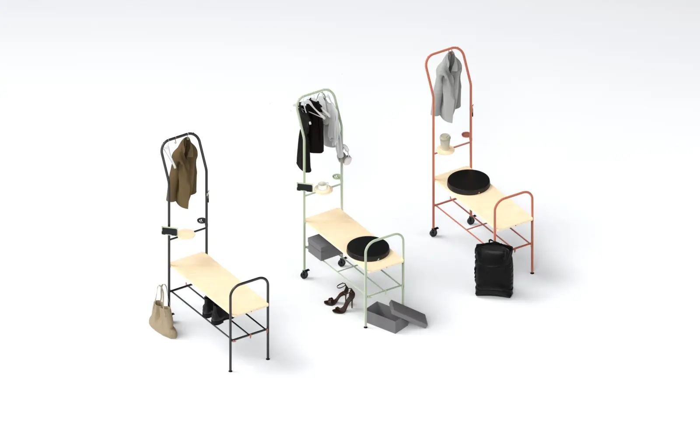
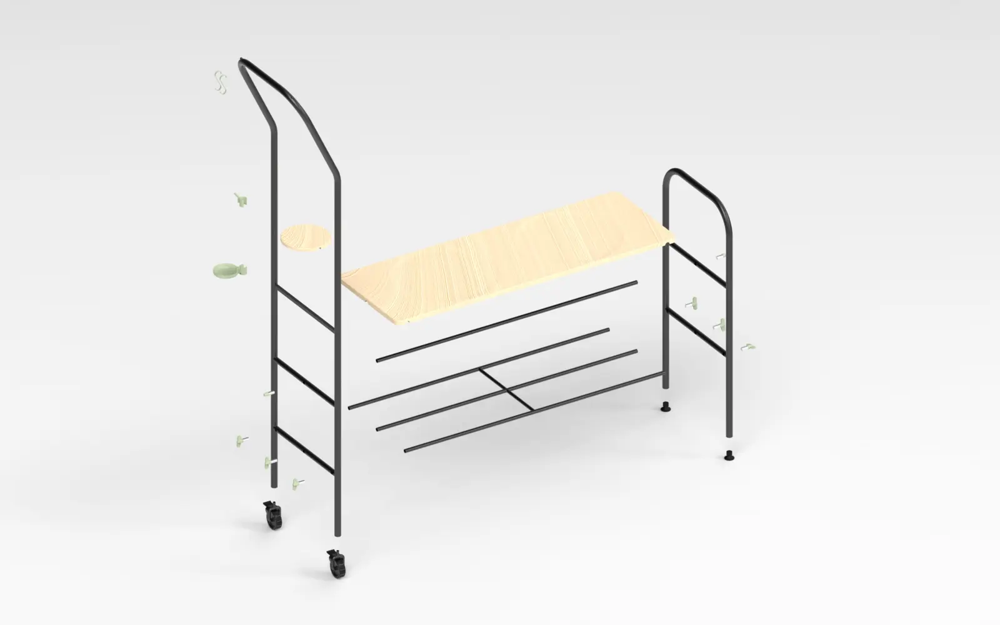
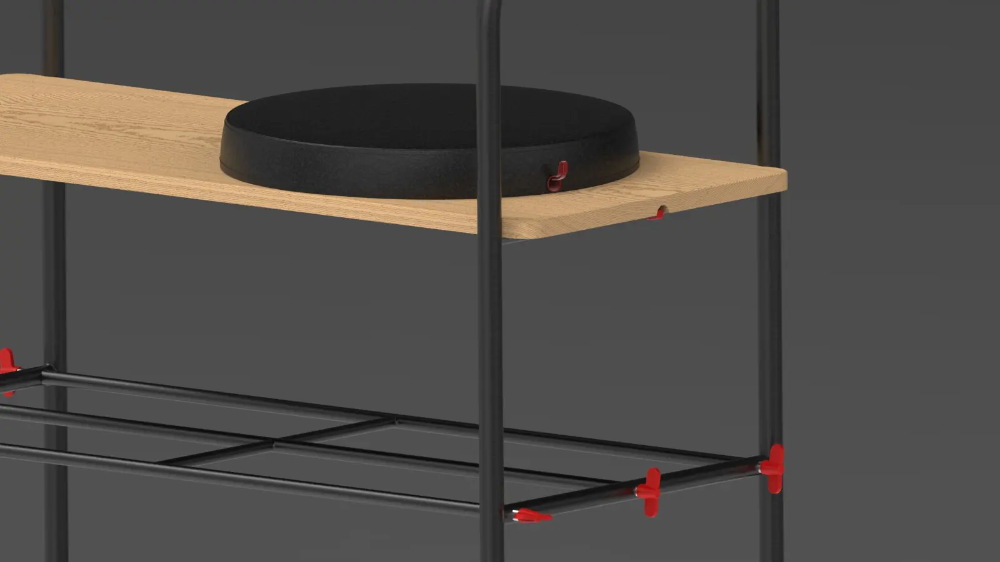
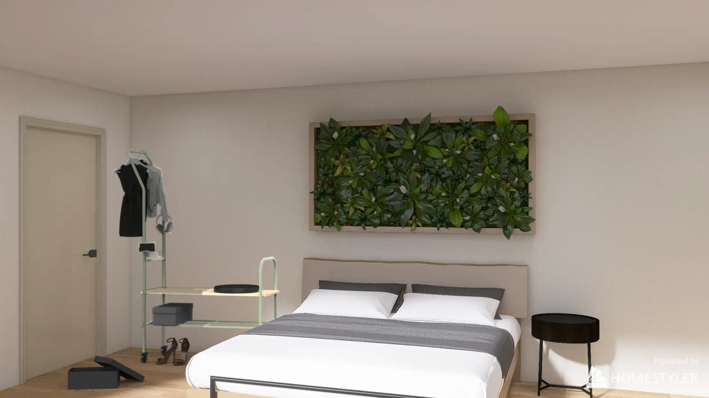

Research & Inspiration
The project explored Scandinavian design principles and contemporary living habits, focusing on flexibility, multifunctionality and the evolving needs of shared spaces.
- Investigated Scandinavian design values
- Explored the cultural role of the Scandinavian coat room
- Analysed behaviours within shared living environments
- Explored modularity and multifunctionality
- Defined the design vision around simplicity and adaptability
Concept Development
Inspired by the Swedish concept of Lagom — "just the right amount" — the project embraces a philosophy of balance over excess, where every element has a clear purpose. Rather than designing a conventional storage unit, Lagom reinterprets the Scandinavian entrance as a flexible system for contemporary urban life. It responds to smaller homes, shared environments and lifestyles characterised by frequent movement, allowing users to adapt the furniture to different spaces and needs. This principle shaped every design decision, resulting in a product that is adaptable, understated and naturally suited to different everyday situations.
- Developed the product concept and design principles
- Translated the Scandinavian coat room into a contemporary urban context
- Defined multiple usage scenarios
- Designed interchangeable accessories
- Balanced aesthetics, functionality and ease of use
Product Design
Lagom was designed as a lightweight, transportable and easy-to-assemble piece of furniture that can be reconfigured according to different spaces and needs.
- Designed a modular steel frame with wooden components
- Developed a tool-free assembly system
- Created multiple product configurations
- Selected recyclable and durable materials
- Prioritised portability and ease of reconfiguration
User Experience
Lagom supports the everyday rituals that take place at the entrance: hanging a coat, leaving shoes, storing personal belongings or preparing to move into the next part of the day. The modular system allows users to personalise the configuration according to their context, making the product suitable for individual homes, offices and shared spaces.
- Designed intuitive assembly and interaction
- Prioritised portability and flexibility
- Supported multiple user scenarios through modular accessories
- Enhanced usability through simple and accessible design solutions
A familiar ritual, reinterpreted
Lagom demonstrates how product design can reinterpret a familiar cultural practice to respond to contemporary ways of living. By taking inspiration from the Scandinavian coat room and translating its principles into a modular system, the project proposes a flexible piece of furniture for a generation living in smaller homes, sharing spaces and constantly moving between environments. Combining modularity, ease of assembly and timeless Scandinavian aesthetics, Lagom turns the entrance into an adaptable space that supports the rituals of everyday urban life.




